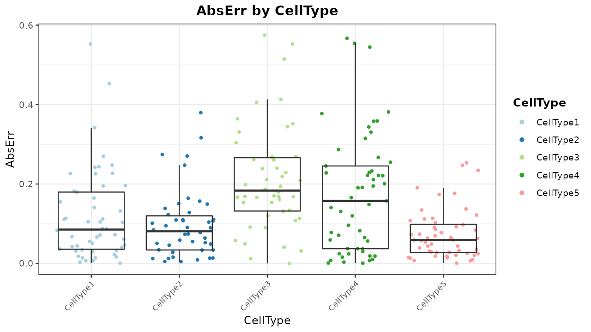
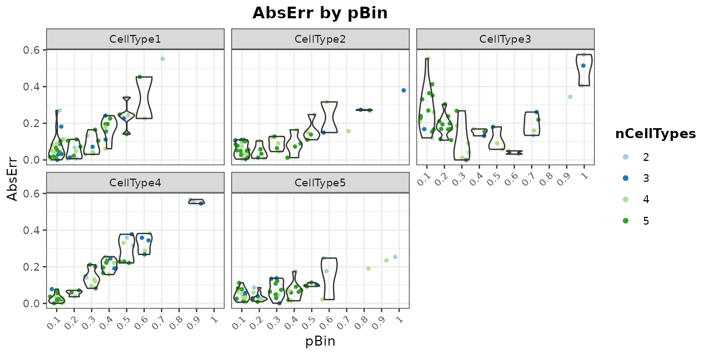
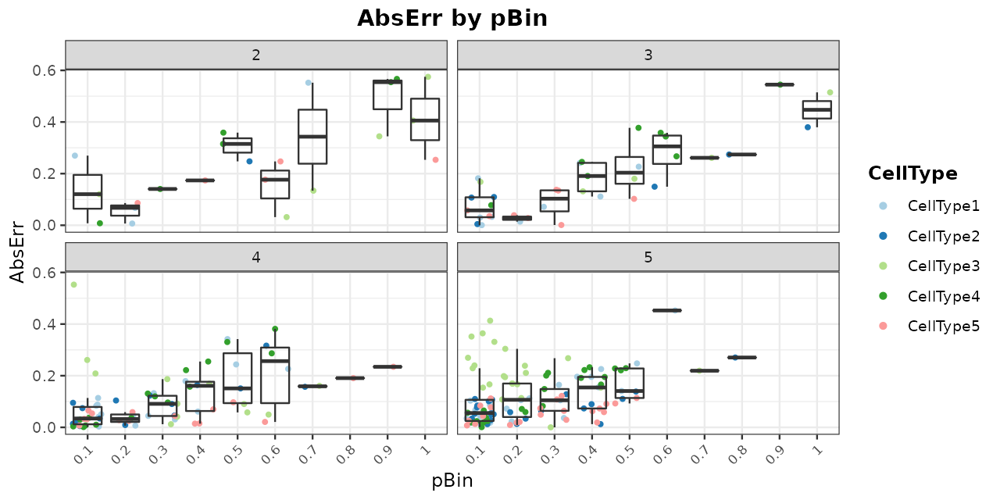
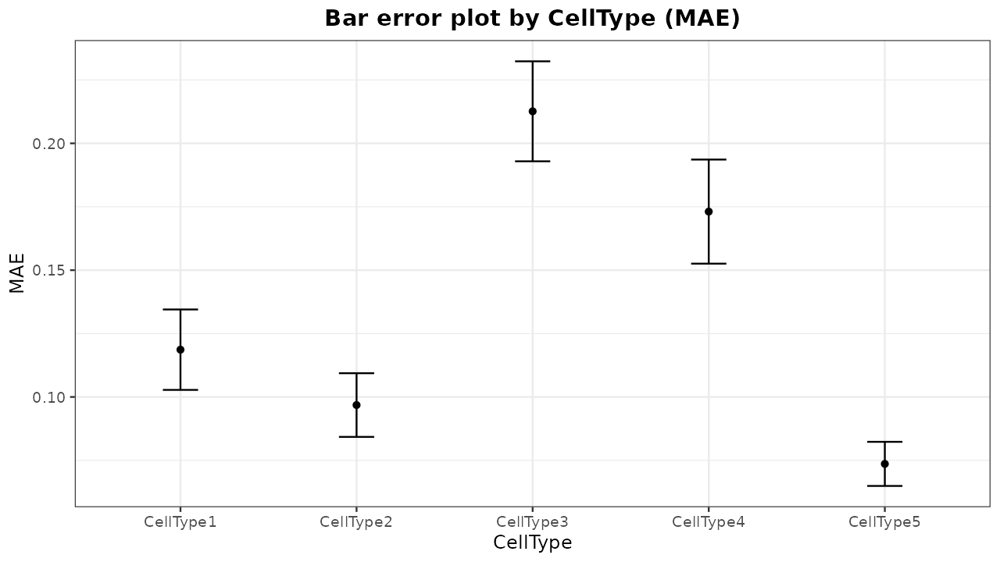
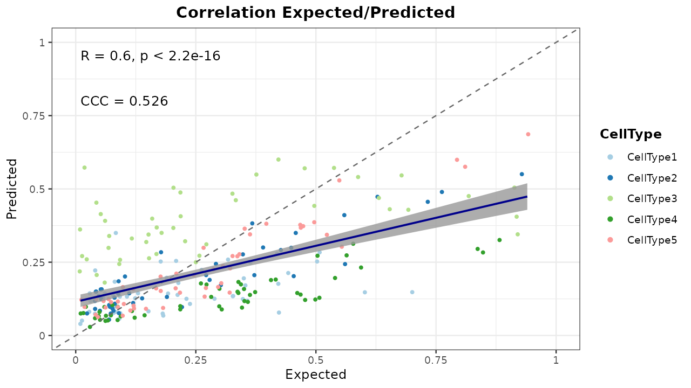
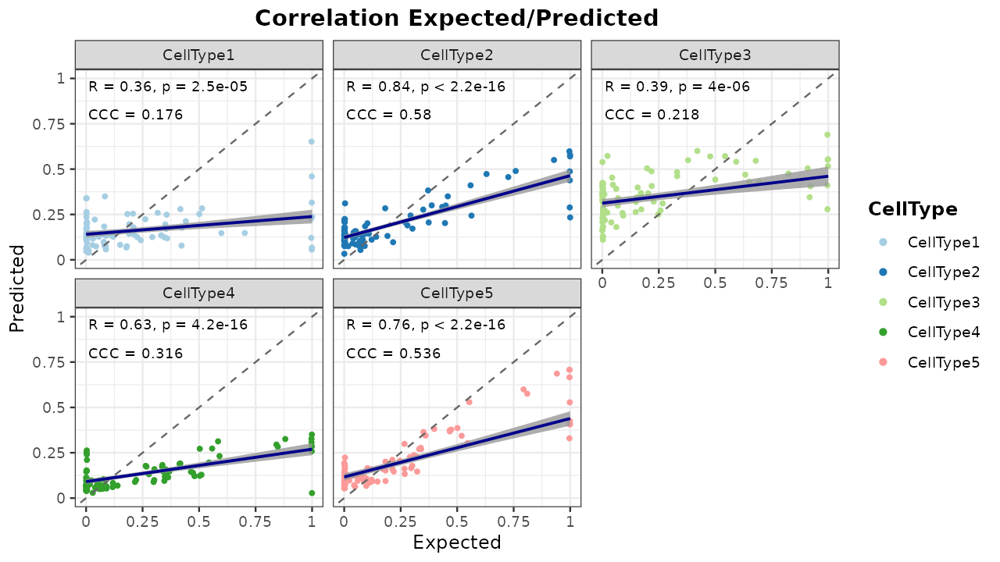
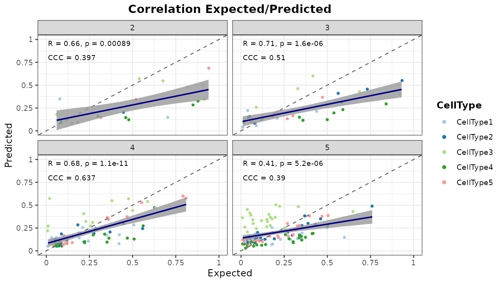
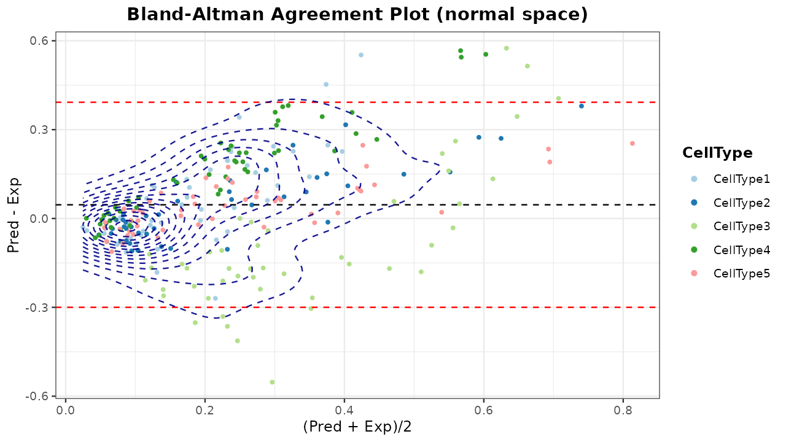
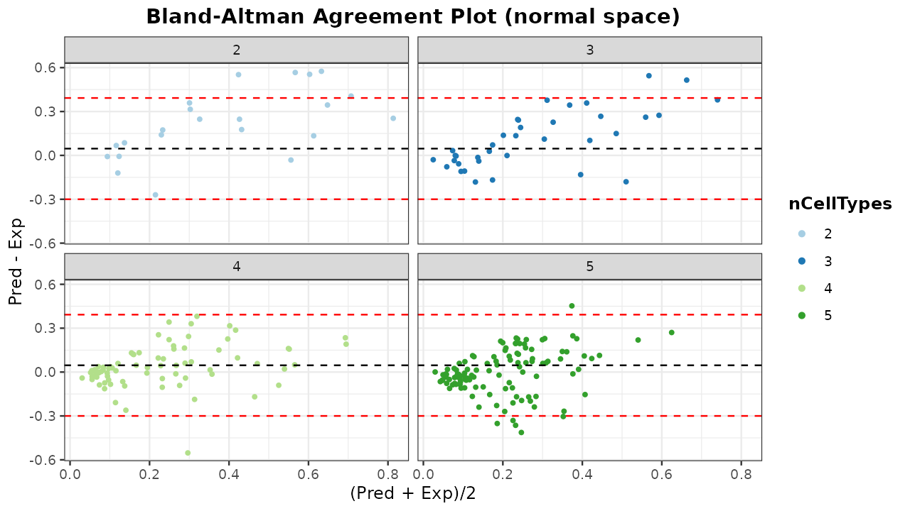
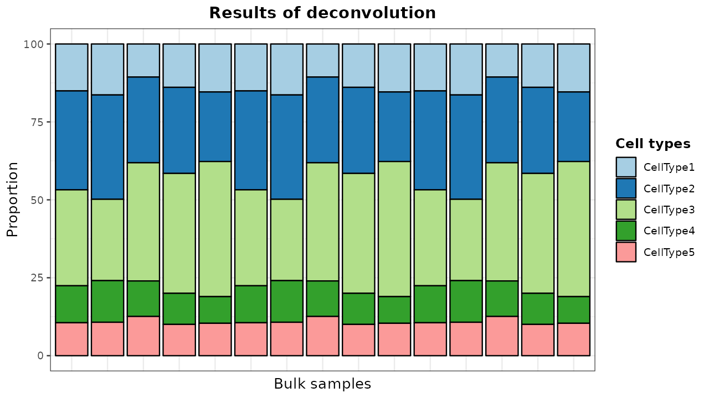

digitalDLSorteR implements all the necessary tools to build new context-specific deconvolution models from previously characterized scRNA-Seq data. Taking into account the variability of some cell types depending on the context in which they are found, we aim to generate different models to each environment. From our view, this opens a door to more accurate and specific models instead of using generic transcriptional profiles as a reference (i.e., the use of peripheral blood mononuclear cell (PBMC) to estimate the proportions of tumor-infiltrating lymphocytes in oncological settings). In this vignette, we will show the workflow required to build new context-specific deconvolution models. For this, simulated data are going to be used in order to avoid long runtimes. The performance of a real model can be explored in the article Performance of a real model: deconvolution of colorectal cancer samples.
This workflow is computationally more expensive than using
pre-trained models, so we recommend building new models if you want to
deconvolute samples from an unavailable model or in case you think your
scRNA-Seq data provide a better picture of this environment than the
ones already offered in digitalDLSorteRmodels. In any case,
digitalDLSorteR provides a set of functionalities that
make this process easier and computationally cheaper in terms of RAM
usage: batch processing of data and the use of the HDF5Array
and DelayedArray
packages (see the article HDF5 files as
back-end for more information). Furthermore, all steps are
centralized in the DigitalDLSorter S4-class, the core of
digitalDLSorteR, to provide a good user experience and
keep all the information tidy in the same object.
The main steps needed to build new models are summarized below, but you can find a visual summary in the following figure.
- Loading data into a
DigitalDLSorterobject - Oversampling of single-cell profiles (optional)
- Generation of cell composition matrix for pseudo-bulk RNA-Seq samples
- Simulation of pseudo-bulk RNA-Seq samples using known cell composition
- Deep Neural Network training
- Evaluation of trained deconvolution model on test data: visualization of results
- Loading and deconvolution of new bulk RNA-Seq samples
- Saving
DigitalDLSorterobject and trained models
Workflow to build new context-specific deconvolution models
Loading data into a DigitalDLSorter object
First, we have to load scRNA-Seq data into a
DigitalDLSorter object. This S4 class contains all the
slots needed to store the data generated during the construction of new
deconvolution models. The information to be provided consists of three
elements:
- Counts matrix: a matrix with genes as rows and cells as columns.
- Cells metadata: a table with annotations (columns) for each cell (rows). The expected information in this data frame is a column with the ID used for each cell, a column with the corresponding cell types, and metadata that could be used as covariates in the following steps (gender, sample type…).
- Genes metadata with annotations (columns) for each gene (rows). This data frame should contain the notation used for each gene in the counts matrix and other covariates such as gene length, GC content, etc.
This information may come from a pre-loaded
SingleCellExperiment object or from files stored on disk.
For the latter, tsv, tsv.gz, sparse matrices (mtx) and HDF5 (h5) formats
are accepted. Finally, data will be stored as a
SingleCellExperiment object in the
single.cell.real slot of the new
DigitalDLSorter object.
To do so, we first simulate a scRNA-Seq data matrix of 500 rows (genes) and 100 columns (samples) by randomly sampling from a Poisson distribution. Note: these simulated data are only for descriptive purposes to show functionalities of the package, it is not intended to generate realistic transcriptomic data.
## loading the packages
suppressMessages(library(digitalDLSorteR))
suppressMessages(library(SingleCellExperiment))
## set seed for reproducibility
set.seed(123)
sce <- SingleCellExperiment(
matrix(
stats::rpois(50000, lambda = 5), nrow = 500, ncol = 100,
dimnames = list(paste0("Gene", seq(500)), paste0("RHC", seq(100)))
),
colData = data.frame(
Cell_ID = paste0("RHC", seq(100)),
Cell_Type = sample(
x = paste0("CellType", seq(5)), size = 100, replace = TRUE
)
),
rowData = data.frame(
Gene_ID = paste0("Gene", seq(500))
)
)Then, we provide this SingleCellExperiment object to
loadSCProfiles as follows:
DDLSToy <- loadSCProfiles(
single.cell = sce,
cell.ID.column = "Cell_ID",
gene.ID.column = "Gene_ID",
min.cells = 0,
min.counts = 0,
project = "ToyExample"
)
DDLSToy## An object of class DigitalDLSorter
## Real single-cell profiles:
## 500 features and 100 cells
## rownames: Gene316 Gene314 Gene403 ... Gene403 Gene167 Gene76 Gene315
## colnames: RHC37 RHC69 RHC70 ... RHC70 RHC42 RHC1 RHC92
## Project: ToyExampleIn this case, we are loading single-cell profiles from a
SingleCellExperiment object, but it could be done by
directly providing files as follows:
## this code will not be run
toyFiles <- c("countsMatrix.tsv.gz",
"cellsMetadata.tsv.gz",
"genesMetadata.tsv.gz")
DDLSToy <- loadSCProfiles(
single.cell = toyFiles,
cell.ID.column = "Cell_ID",
gene.ID.column = "external_gene_name",
min.cells = 0, min.counts = 0,
project = "ToyExampleBreast"
)In documentation, you can see all the parameters that
loadSCProfiles offers to preprocess the loaded data, such
as min.counts and min.cells,
fun.aggregate, etc. In addition, in case of working with
very large scRNA-Seq datasets, digitalDLSorteR allows
to use HDF5 files as back-end to handle data that do not fit in RAM
using the HDF5Array
and DelayedArray
packages. We only recommend their use in actual cases of huge datasets.
HDF5 files, despite being very powerful and useful for dealing with RAM
problems, make processes much slower. As an example, the following code
chunk would create an HDF5 file with the scRNA-seq data that allows
working without loading them into RAM. See the documentation for more
details.
DDLSToy <- loadSCProfiles(
single.cell = toyFiles, cell.ID.column = "Cell_ID",
gene.ID.column = "external_gene_name",
min.cells = 0, min.counts = 0,
file.backend = "singlecell_data.h5",
project = "ToyExampleBreast"
)Oversampling of single-cell profiles
digitalDLSorteR offers the possibility to simulate
new single-cell profiles from real ones to increase signal and
variability in small datasets or when under-represented cell types are
present. This step is optional but recommended in these situations. The
estimateZinbwaveParams and simSCProfiles
functions are used for this purpose.
Tuning of the ZINB-WaVE model to simulate new single-cell profiles
First step is to estimate a set of parameters that fit the real single-cell data to simulate new realistic single-cell profiles. We chose the ZINB-WaVE framework (Risso et al. 2018) that estimates the parameters of a ZINB (zero-inflated negative binomial) distribution. It was chosen for its ability to accommodate not only variability within a particular cell type, but also variability within the entire experiment.
This process is performed by the estimateZinbwaveParams
function, which makes use of the splatter
package, a wrapper of the original zinbwave
package. You must specify the column corresponding to cell types in the
cells metadata, and other cell/gene covariates can be added based on
your experimental design, such as patient, gender or gene length. This
process may take a few minutes to run, so be patient. In any case, you
can adjust the number of used threads in some steps during the
estimation with the threads argument depending on your
computational resources by the BiocParallel
package. In case of large datasets with some cell types
under-represented, the subset.cells parameter allows making
a subset of cells to speed up the process. With the following code, a
total of 40 cells will be taken from the original scRNA-Seq data and
used to fit a ZINB-WaVE model.
DDLSToy <- estimateZinbwaveParams(
object = DDLSToy,
cell.ID.column = "Cell_ID",
gene.ID.column = "Gene_ID",
cell.type.column = "Cell_Type",
subset.cells = 40,
threads = 1,
verbose = TRUE
)## === Setting parallel environment to 1 thread(s)## === Estimating parameters for all cell types in the experiment## === Creating cell model matrix based on Cell_Type columns:## ~Cell_Type## === Number of cells for each cell type:
## - CellType1: 11
## - CellType2: 6
## - CellType3: 10
## - CellType4: 7
## - CellType5: 6## === Creating gene model matrix without gene covariates## === Running estimation process (Start time 02:45:12 PM)## Removing all zero genes...## Fitting model...## Create model:## ok## Initialize parameters:## ok## Optimize parameters:## Iteration 1## penalized log-likelihood = -54085.7356583502## After dispersion optimization = -43320.8019735184## user system elapsed
## 8.721 0.016 8.737## After right optimization = -42718.0963333899## After orthogonalization = -42718.0963333899## user system elapsed
## 0.570 0.000 0.569## After left optimization = -42710.2243757023## After orthogonalization = -42710.2243757023## Iteration 2## penalized log-likelihood = -42710.2243757023## After dispersion optimization = -42710.2246200143## user system elapsed
## 7.577 0.008 7.585## After right optimization = -42708.2394778232## After orthogonalization = -42708.2394778232## user system elapsed
## 1.177 0.000 1.177## After left optimization = -42706.8950844827## After orthogonalization = -42706.8950844827## Iteration 3## penalized log-likelihood = -42706.8950844827## ok##
## DONE##
## Invested time: 48.32
DDLSToy## An object of class DigitalDLSorter
## Real single-cell profiles:
## 500 features and 100 cells
## rownames: Gene313 Gene61 Gene260 ... Gene260 Gene40 Gene484 Gene173
## colnames: RHC29 RHC59 RHC62 ... RHC62 RHC34 RHC91 RHC93
## ZinbParams object:
## 40 samples; 500 genes.
## 5 sample-level covariate(s) (mu); 5 sample-level covariate(s) (pi);
## 1 gene-level covariate(s) (mu); 1 gene-level covariate(s) (pi);
## 0 latent factor(s).
## Project: ToyExampleSimulating new single-cell profiles
Once ZINB-WaVE parameters have been estimated, the
simSCProfiles function uses them to simulate new
single-cell profiles based on the real ones. It is done by randomly
sampling from a negative binomial distribution with the estimated ZINB
parameters \(\mu\) and \(\theta\), and introducing dropouts by
sampling from a binomial distribution with the estimated probability
\(\pi\). You must specify the number of
cell profiles per cell type to be generated (n.cells). For
example, if your data set is composed of 5 cell types and
n.cells is equal to 10, the number of simulated profiles
will be 50.
DDLSToy <- simSCProfiles(
object = DDLSToy,
cell.ID.column = "Cell_ID",
cell.type.column = "Cell_Type",
n.cells = 10,
suffix.names = "_Simul",
verbose = TRUE
)## === Getting parameters from model:## - mu: 40, 500## - pi: 40, 500## - Theta: 500## === Selected cell type(s) from ZINB-WaVE model (5 cell type(s)):## - CellType2
## - CellType3
## - CellType4
## - CellType5
## - CellType1## === Simulated matrix dimensions:## - n (cells): 50## - J (genes): 500## - i (# entries): 25000##
## DONEThese simulated single-cell profiles are stored in
single.cell.simul slot to be used to simulate new bulk
RNA-Seq profiles with a known cell composition.
DDLSToy## An object of class DigitalDLSorter
## Real single-cell profiles:
## 500 features and 100 cells
## rownames: Gene130 Gene245 Gene373 ... Gene373 Gene402 Gene344 Gene240
## colnames: RHC11 RHC55 RHC6 ... RHC6 RHC4 RHC12 RHC33
## ZinbParams object:
## 40 samples; 500 genes.
## 5 sample-level covariate(s) (mu); 5 sample-level covariate(s) (pi);
## 1 gene-level covariate(s) (mu); 1 gene-level covariate(s) (pi);
## 0 latent factor(s).
## Simulated single-cell profiles:
## 500 features and 50 cells
## rownames: Gene100 Gene8 Gene11 ... Gene11 Gene127 Gene179 Gene137
## colnames: CellType2_Simul10 CellType1_Simul42 CellType3_Simul12 ... CellType3_Simul12 CellType5_Simul34 CellType2_Simul8 CellType2_Simul3
## Project: ToyExampleIn this step, it is also possible to store the new simulated single-cell profiles in a HDF5 file. Indeed, they can be simulated in batches, avoiding loading all data into RAM. The code would be as follows:
DDLSToy <- simSCProfiles(
object = DDLSToy,
cell.ID.column = "Cell_ID",
cell.type.column = "Cell_Type",
n.cells = 10,
suffix.names = "_Simul",
file.backend = "simulated_singlecell_data.h5",
block.processing = TRUE,
block.size = 20, # number of single-cell profiles simulated per batch
verbose = TRUE
)Generation of cell composition matrix for pseudo-bulk RNA-Seq samples
To simulate pseudo-bulk samples with a known cell composition, it is
necessary to generate a cell composition matrix that determines the
proportion of every cell type in every sample. This is carried out using
the generateBulkCellMatrix function that stores these
results in the prob.cell.types slot as a
ProbMatrixCellTypes object.
This process starts with dividing single-cell profiles into training
and test data (see train.freq.cells argument in
documentation). Each subset will be used to generate each subset of bulk
samples (training and test) in order to avoid any distortion of results
during model evaluation. Then, proportions are generated using six
different methods to avoid biases during training due to the cellular
composition of the simulated bulk RNA-Seq samples:
- Cell proportions are randomly sampled from a truncated uniform
distribution with predefined limits according to a priori
knowledge of the abundance of each cell type (see
prob.designargument). This information can be inferred from the single cell analysis itself or from the literature. - A second set is generated by randomly permuting cell type labels from a distribution generated by the previous method.
- Cell proportions are randomly sampled as by method 1 without replacement.
- Using the last method to generate proportions, cell types labels are randomly sampled.
- Cell proportions are randomly sampled from a Dirichlet distribution.
- Pseudo-bulk RNA-Seq samples composed of the same cell type are generated in order to provide ‘pure’ pseudo-bulk samples.
Proportion of each type of sample can be set by the
proportion.train and proportion.test
arguments. Moreover, prob.zero controls the number of zeros
(number of cell types that will be zero in each sample) produced by each
method. This parameter was introduced because otherwise cell
compositions that are strongly biased towards a certain cell type. To
account for this, prob.zero generate sparse compositions
depending on the probability entered for each method. Finally, other
important parameters are n.cells, which determines the
number of cells that will compose each pseudo-bulk sample, and
num.bulk.samples, which defines the total number of
pseudo-bulk samples generated (training + test subsets). The code would
be as follows:
## for reproducibility
set.seed(123)
## prior knowledge for prob.design argument
probMatrix <- data.frame(
Cell_Type = paste0("CellType", seq(5)),
from = c(rep(1, 2), 1, rep(30, 2)),
to = c(rep(15, 2), 50, rep(70, 2))
)
DDLSToy <- generateBulkCellMatrix(
object = DDLSToy,
cell.ID.column = "Cell_ID",
cell.type.column = "Cell_Type",
prob.design = probMatrix,
num.bulk.samples = 250,
n.cells = 100,
verbose = TRUE
)##
## === The number of bulk RNA-Seq samples that will be generated is equal to 250##
## === Training set cells by type:## - CellType2: 16
## - CellType3: 25
## - CellType4: 20
## - CellType5: 15
## - CellType1: 24## === Test set cells by type:## - CellType2: 7
## - CellType3: 10
## - CellType4: 6
## - CellType5: 14
## - CellType1: 13## === Probability matrix for training data:## - Bulk RNA-Seq samples: 167
## - Cell types: 5## === Probability matrix for test data:## - Bulk RNA-Seq samples: 83
## - Cell types: 5## DONE
DDLSToy## An object of class DigitalDLSorter
## Real single-cell profiles:
## 500 features and 100 cells
## rownames: Gene469 Gene244 Gene283 ... Gene283 Gene212 Gene34 Gene265
## colnames: RHC90 RHC77 RHC26 ... RHC26 RHC82 RHC65 RHC60
## ZinbParams object:
## 40 samples; 500 genes.
## 5 sample-level covariate(s) (mu); 5 sample-level covariate(s) (pi);
## 1 gene-level covariate(s) (mu); 1 gene-level covariate(s) (pi);
## 0 latent factor(s).
## Simulated single-cell profiles:
## 500 features and 50 cells
## rownames: Gene4 Gene337 Gene192 ... Gene192 Gene319 Gene271 Gene422
## colnames: CellType3_Simul15 CellType3_Simul12 CellType4_Simul26 ... CellType4_Simul26 CellType2_Simul4 CellType5_Simul40 CellType1_Simul43
## Cell type composition matrices:
## Cell type matrix for traindata: 167 bulk samples and 5 cell types
## Cell type matrix for testdata: 83 bulk samples and 5 cell types
## Project: ToyExampleRemember that this is a simulated example. In real circumstances, depending on the number of single-cell profiles loaded/simulated at the beginning and computational resources, about 20,000-30,000 samples would be recommended.
You can inspect the cell composition matrix created in this step with
the getter function getProbMatrix:
head(getProbMatrix(DDLSToy, type.data = "train"))## CellType1 CellType2 CellType3 CellType4 CellType5
## Bulk_1 8 2 29 41 20
## Bulk_2 2 0 0 98 0
## Bulk_3 6 4 8 34 48
## Bulk_4 1 9 24 34 32
## Bulk_5 10 8 7 47 28
## Bulk_6 19 22 0 59 0
tail(getProbMatrix(DDLSToy, type.data = "train"))## CellType1 CellType2 CellType3 CellType4 CellType5
## Bulk_162 0 0 0 0 100
## Bulk_163 0 0 0 0 100
## Bulk_164 0 0 0 0 100
## Bulk_165 0 0 0 0 100
## Bulk_166 0 0 0 0 100
## Bulk_167 0 0 0 0 100Moreover, distributions can be plotted using the
showProbPlot function:
lapply(
1:6, function(x) {
showProbPlot(
DDLSToy, type.data = "train", set = x, type.plot = "boxplot"
)
}
)## [[1]]
##
## [[2]]
##
## [[3]]
##
## [[4]]
##
## [[5]]
##
## [[6]]
Simulation of pseudo-bulk RNA-Seq samples with known cell composition
Now, simulated cell proportions are used to create pseudo-bulk samples. They are simulated by aggregating single-cell profiles of each cell type according to these proportions. The idea is to simulate a real bulk RNA-Seq data in which the gene expression levels of each cell are aggregated into a single sample. Therefore, this expression matrix will be generated according to the following equation:
\[\begin{equation} T_{ij} = \sum_{k = 1}^{K} \sum_{z = 1}^Z C_{izk} \end{equation}\]
\[\begin{equation*} \textrm{such as} \left\{ \begin{array}{l} i = 1 \ldots M;\\ j = 1 \ldots N \\ Z = 1 \ldots \textrm{n.cells} \cdot P_{kj} \\ \sum_{k = 1}^K Z \cdot P_{kj} = \textrm{n.cells} \end{array} \right. \end{equation*}\]
where \(T_{ij}\) is the expression
level of gene \(i\) in bulk sample
\(j\); \(C_{izk}\) is the expression level of gene
\(i\) in cell \(z\) in bulk sample \(j\); and \(P_{kj}\) is the proportion of cell type
\(k\) in bulk sample \(j\) (the cell composition matrix generated
in the previous step). \(Z\) represents
the number of cells that will make up the proportion of cell type \(k\) in the bulk sample \(j\) and corresponds to the
n.cells parameter from the
generateBulkCellMatrix function. Cells are randomly sampled
based on their cell type and how they were divided into training and
test subsets. This step is performed by simBulkProfiles as
follows:
DDLSToy <- simBulkProfiles(
object = DDLSToy, type.data = "both", pseudobulk.function = "MeanCPM"
)## === Setting parallel environment to 1 thread(s)##
## === Generating train bulk samples:##
## === Generating test bulk samples:##
## DONEThese samples are stored as a SummarizedExperiment
object in the bulk.simul slot where they can be inspected
at any time:
DDLSToy## An object of class DigitalDLSorter
## Real single-cell profiles:
## 500 features and 100 cells
## rownames: Gene243 Gene118 Gene362 ... Gene362 Gene321 Gene26 Gene149
## colnames: RHC63 RHC70 RHC44 ... RHC44 RHC34 RHC49 RHC90
## ZinbParams object:
## 40 samples; 500 genes.
## 5 sample-level covariate(s) (mu); 5 sample-level covariate(s) (pi);
## 1 gene-level covariate(s) (mu); 1 gene-level covariate(s) (pi);
## 0 latent factor(s).
## Simulated single-cell profiles:
## 500 features and 50 cells
## rownames: Gene259 Gene127 Gene337 ... Gene337 Gene313 Gene462 Gene12
## colnames: CellType5_Simul37 CellType2_Simul6 CellType1_Simul50 ... CellType1_Simul50 CellType4_Simul25 CellType2_Simul8 CellType3_Simul16
## Cell type composition matrices:
## Cell type matrix for traindata: 167 bulk samples and 5 cell types
## Cell type matrix for testdata: 83 bulk samples and 5 cell types
## Simulated bulk samples:
## train bulk samples:
## 500 features and 167 samples
## rownames: Gene359 Gene82 Gene40 ... Gene40 Gene226 Gene184 Gene102
## colnames: Bulk_90 Bulk_107 Bulk_116 ... Bulk_116 Bulk_75 Bulk_89 Bulk_109
## test bulk samples:
## 500 features and 83 samples
## rownames: Gene429 Gene263 Gene242 ... Gene242 Gene317 Gene495 Gene411
## colnames: Bulk_26 Bulk_38 Bulk_63 ... Bulk_63 Bulk_4 Bulk_81 Bulk_48
## Project: ToyExampleAgain, these pseudo-bulk samples can be stored as an HDF5 file. This
is the most recommended step of digitalDLSorteR to use
this functionality, as it is the most computationally expensive part of
the package and these samples will only be accessed during training and
evaluation of Deep Neural Network (DNN) model. As in
simSCProfiles, samples can be simulated in batches and a
desired number of threads can also be set:
DDLSToy <- simBulkProfiles(
object = DDLSToy,
type.data = "both",
file.backend = "pseudobulk_samples.h5",
block.processing = TRUE,
block.size = 1000,
threads = 2
)New methods to generate pseudo-bulk samples
digitalDLSorteR (>= 0.2.0) provides three methods
to geneate pseudo-bulk samples through the
pseudobulk.function argument:
-
"MeanCPM": single-cell profiles (raw counts) are transformed into CPMs and cross-cell averages are calculated. Then, \(log_2(CPM + 1)\) are calculated. In this way, every cell contributes the same weight rather than creating biases due to sequencing depth or the fact that some cell types express more than others. -
"AddCPM": single-cell profiles (raw counts) are transformed into CPMs and are added up across cells. Then, \(log_2(CPM + 1)\) are calculated. This method is practically identical to the previous one. -
"AddRawCount": single-cell profiles (raw counts) are added up across cells. Then, \(log_2(CPM + 1)\) are calculated.
Which method is chosen depends on the technology used to generate the starting single-cell RNA-seq data. In future releases, we will make available new examples for each situation.
Deep Neural Network training
Once pseudo-bulk samples have been generated, DNN model can be
trained and evaluated. trainDigitalDLSorterModel is the
function in charge of both steps and uses the keras package with
tensorflow
as back-end. If you want more information about keras or have any
problems during its installation, please see Keras/TensorFlow installation and
configuration vignette. In any case, the
installTFpython function automates this process, so we
recommend its use.
In terms of architecture and model parameters,
trainDigitalDLSorterModel implements by default two hidden
layers with 200 neurons each, although any of these parameters can be
modified through the trainDigitalDLSorterModel parameters.
In addition, for a more customized model, it is possible to provide a
pre-built model in the custom.model parameter. See the
documentation for more details.
The code with default parameters is as follows:
DDLSToy <- trainDigitalDLSorterModel(object = DDLSToy, scaling = "standarize")## === Training and test from stored data was selected## Model: "DigitalDLSorter"
## ________________________________________________________________________________
## Layer (type) Output Shape Param #
## ================================================================================
## Dense1 (Dense) (None, 200) 100200
## ________________________________________________________________________________
## BatchNormalization1 (BatchNormaliza (None, 200) 800
## ________________________________________________________________________________
## ActivationReLu1 (Activation) (None, 200) 0
## ________________________________________________________________________________
## Dropout1 (Dropout) (None, 200) 0
## ________________________________________________________________________________
## Dense2 (Dense) (None, 200) 40200
## ________________________________________________________________________________
## BatchNormalization2 (BatchNormaliza (None, 200) 800
## ________________________________________________________________________________
## ActivationReLu2 (Activation) (None, 200) 0
## ________________________________________________________________________________
## Dropout2 (Dropout) (None, 200) 0
## ________________________________________________________________________________
## Dense3 (Dense) (None, 5) 1005
## ________________________________________________________________________________
## BatchNormalization3 (BatchNormaliza (None, 5) 20
## ________________________________________________________________________________
## ActivationSoftmax (Activation) (None, 5) 0
## ================================================================================
## Total params: 143,025
## Trainable params: 142,215
## Non-trainable params: 810
## ________________________________________________________________________________##
## === Training DNN with 267 samples:##
## === Evaluating DNN in test data (133 samples)## - loss: 0.7643
## - accuracy: 0.609
## - mean_absolute_error: 0.193
## - categorical_accuracy: 0.609##
## === Generating prediction results using test data## DONEIn the end, DDLSToy will contain a
DigitalDLSorterDNN object with all the information
associated with the model in the trained.model slot: a
keras.engine.sequential.Sequential object with the trained
model, metrics and loss function histories during training, and
prediction results on test data.
DDLSToy## An object of class DigitalDLSorter
## Real single-cell profiles:
## 500 features and 100 cells
## rownames: Gene431 Gene278 Gene232 ... Gene232 Gene373 Gene237 Gene453
## colnames: RHC22 RHC56 RHC13 ... RHC13 RHC40 RHC83 RHC36
## ZinbParams object:
## 40 samples; 500 genes.
## 5 sample-level covariate(s) (mu); 5 sample-level covariate(s) (pi);
## 1 gene-level covariate(s) (mu); 1 gene-level covariate(s) (pi);
## 0 latent factor(s).
## Simulated single-cell profiles:
## 500 features and 50 cells
## rownames: Gene93 Gene311 Gene308 ... Gene308 Gene234 Gene365 Gene462
## colnames: CellType5_Simul35 CellType4_Simul30 CellType3_Simul17 ... CellType3_Simul17 CellType4_Simul23 CellType5_Simul33 CellType3_Simul15
## Cell type composition matrices:
## Cell type matrix for traindata: 167 bulk samples and 5 cell types
## Cell type matrix for testdata: 83 bulk samples and 5 cell types
## Simulated bulk samples:
## train bulk samples:
## 500 features and 167 samples
## rownames: Gene394 Gene174 Gene279 ... Gene279 Gene62 Gene261 Gene337
## colnames: Bulk_92 Bulk_157 Bulk_98 ... Bulk_98 Bulk_131 Bulk_3 Bulk_31
## test bulk samples:
## 500 features and 83 samples
## rownames: Gene415 Gene336 Gene208 ... Gene208 Gene200 Gene78 Gene351
## colnames: Bulk_65 Bulk_46 Bulk_76 ... Bulk_76 Bulk_53 Bulk_77 Bulk_67
## Trained model: 10 epochs
## Training metrics (last epoch):
## loss: 0.2482
## accuracy: 0.9219
## mean_absolute_error: 0.0892
## categorical_accuracy: 0.9219
## Evaluation metrics on test data:
## loss: 0.7643
## accuracy: 0.609
## mean_absolute_error: 0.193
## categorical_accuracy: 0.609
## Project: ToyExampleSince this is a ‘toy’ example, results are not very accurate. For a real example of a well trained model, see the Performance of a real model: deconvolution of colorectal cancer samples vignette.
on.the.fly argument
The on.the.fly argument of
trainDigitalDLSorterModel allows generating pseudo-bulk
samples ‘on the fly’. It means it is possible to skip the simulation of
pseudo-bulk samples performed by the simBulkProfiles
function, and create samples at the same time as DNN model is being
trained. Of course, runtimes during training may increase, but data is
not loaded into RAM or stored in large HDF5 files. To use this
functionality, it is only necessary to set
on.the.fly = TRUE as follows:
DDLSToy <- trainDigitalDLSorterModel(object = DDLSToy, on.the.fly = TRUE)Evaluation of trained deconvolution model on test data: visualization of results
While metrics from prediction results on test data are informative about the performance of the model, a more comprehensive analysis is needed. For this task, digitalDLSorteR provides a set of visualization functions to represent a variety of error metrics in different ways.
First, calculateEvalMetrics is needed to calculate the
error metrics to be plotted. By default, absolute error
(AbsErr), proportional absolute error
(ppAbsErr), squared error (SqrErr) and
proportional squared error (ppSqrErr) are calculated for
every sample of test data. Furthermore, they are all aggregated using
their average values according to three criteria: each cell type
(CellType), proportion bins of 0.1 (pBin) and
number of different cell types (nCellTypes).
DDLSToy <- calculateEvalMetrics(object = DDLSToy)Now, these results can be plotted by the following battery of functions.
distErrorPlot and barErrorPlot: error
distributions
The distErrorPlot function allows pltting how errors are
distributed in different ways. Moreover, it allows to split the plots in
different panels representing how errors are distributed by a given
variable. Available variables are cell types (CellType) and
number of cell types in samples (nCellTypes). In the
following example, we will represent the overall errors by cell
type.
distErrorPlot(
DDLSToy,
error = "AbsErr",
x.by = "CellType",
color.by = "CellType",
error.labels = FALSE,
type = "boxplot",
size.point = 1
)
Now, if you want to know if there is a bias towards a specific cell
type, yo can use facet.by parameter to split plots by cell
type:
distErrorPlot(
DDLSToy,
error = "AbsErr",
facet.by = "CellType",
color.by = "nCellTypes",
type = "violinplot",
size.point = 1
)
It is also possible to represent errors by number of different cell types in samples:
distErrorPlot(
DDLSToy,
error = "AbsErr",
color.by = "CellType",
facet.by = "nCellTypes",
type = "boxplot",
size.point = 1
)
Finally, with barErrorPlot, the mean error values with
their corresponding dispersion ranges can be plotted as follows:
barErrorPlot(DDLSToy, error = "MAE", by = "CellType")
corrExpPredPlot: correlation plots between predicted
and expected proportions
Ideally, the model should provide predictions that linearly match the actual proportions. Therefore, you can generate correlation plots to assess the performance. By default, the Pearson’s coefficient correlation (\(R\)) and the concordance correlation coefficient (\(CCC\)) are shown as annotations on the plots. The latter is a more realistic measure as it decreases as the points move away from the identity.
corrExpPredPlot(
DDLSToy,
color.by = "CellType",
size.point = 1,
corr = "both"
)## `geom_smooth()` using formula 'y ~ x'
As in the previous case, plots can be split according to different
variables. Now, let’s split the results by CellType and
nCellTypes as an example:
corrExpPredPlot(
DDLSToy,
color.by = "CellType",
facet.by = "CellType",
size.point = 1,
filter.sc = FALSE,
corr = "both"
)## `geom_smooth()` using formula 'y ~ x'
corrExpPredPlot(
DDLSToy,
color.by = "CellType",
facet.by = "nCellTypes",
size.point = 1,
corr = "both"
)## `geom_smooth()` using formula 'y ~ x'
blandAltmanLehPlot: Bland-Altman agreement plots
The blandAltmanLehPlot function allows to display
Bland-Altman agreement plots. This is a kind of graphical method for
comparing the level of agreement between two different sets of values.
The differences between predictions and actual proportions are plotted
against their averages. The central dashed line represents the mean
difference, while the two red dashed lines are the limits of agreement,
which are defined as the mean difference plus and minus 1.96 times the
standard deviation of the differences. 95% of the differences are
expected to fall between these two limits, so the wider the margins, the
worse the performance. It is also possible to display it in \(log_2\) space.
blandAltmanLehPlot(
DDLSToy,
color.by = "CellType",
log.2 = FALSE,
size.point = 1,
filter.sc = TRUE,
density = TRUE,
)
In addition, this function has the same behaviour as previous ones, as it is possible to split plots:
blandAltmanLehPlot(
DDLSToy,
color.by = "nCellTypes",
facet.by = "nCellTypes",
log.2 = FALSE,
size.point = 1,
filter.sc = TRUE,
density = FALSE
)
Loading and deconvolution of new bulk RNA-Seq samples
Once the model has been evaluated, new bulk RNA-seq data can be
loaded into the DigitalDLSorter object to be deconvoluted.
Here, we are going to simulate bulk RNA-Seq data from a Poisson
distribution:
countsBulk <- matrix(
stats::rpois(100, lambda = sample(seq(4, 10), size = 100, replace = TRUE)),
nrow = 40, ncol = 15,
dimnames = list(paste0("Gene", seq(40)), paste0("Bulk", seq(15)))
)And load them into the object:
suppressMessages(library(SummarizedExperiment, quietly = TRUE))
seExample <- SummarizedExperiment(assay = list(counts = countsBulk))
DDLSToy <- loadDeconvData(
object = DDLSToy,
data = seExample,
name.data = "Simulated.example"
)Then, with the deconvDigitalDLSorterObj function, these
new samples can be deconvoluted into the cell types considered by the
model and predicted proportions can be represented by the
barPlotCellTypes function. The cell composition matrix is
stored in the deconv.results slot.
DDLSToy <- deconvDigitalDLSorterObj(
object = DDLSToy,
name.data = "Simulated.example",
normalize = TRUE,
scaling = "standarize",
verbose = FALSE
)
## plot results
barPlotCellTypes(
DDLSToy, name.data = "Simulated.example",
rm.x.text = TRUE, color.line = "black"
)
Saving DigitalDLSorter object and trained models
digitalDLSorteR provides different ways to save
models on disk and to retrieve them in the DigitalDLSorter
object. First, you can save DigitalDLSorter objects as RDS
files. Since this file format only accepts native R objects, they are
not able to store complex data structures such as keras Python objects
(keras.engine.sequential.Sequential class). To make it
possible, digitalDLSorteR implements a
saveRDS generic function that converts the keras model
object into a list with network architecture and weights after training.
These two pieces of information are the minimal part needed to perform
new predictions. When the model is to be used, it is compiled back to a
keras.engine.sequential.Sequential object.
## this code will not be run
saveRDS(object = DDLSToy, file = "valid/path")However, the optimizer state is not saved in this way. To offer the
possibility to save the complete model, digitalDLSorteR
has the saveTrainedModelAsH5 function to save on disk the
DNN model, and loadTrainedModelFromH5 to load-back models
into DigitalDLSorter objects. Note that in this way just
the keras model is saved as an HDF5 file.
## this code will not be run
saveTrainedModelAsH5(DDLSToy, file.path = "valid/path")
DDLSToy <- loadTrainedModelFromH5(DDLSToy)